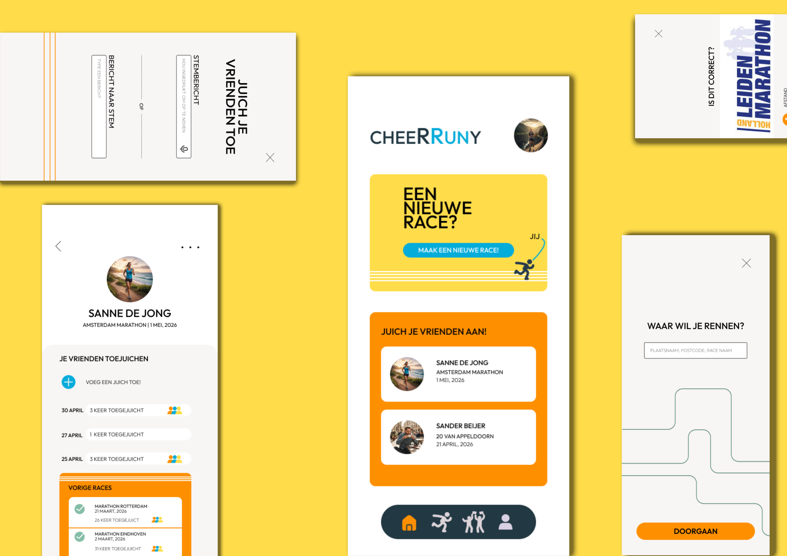
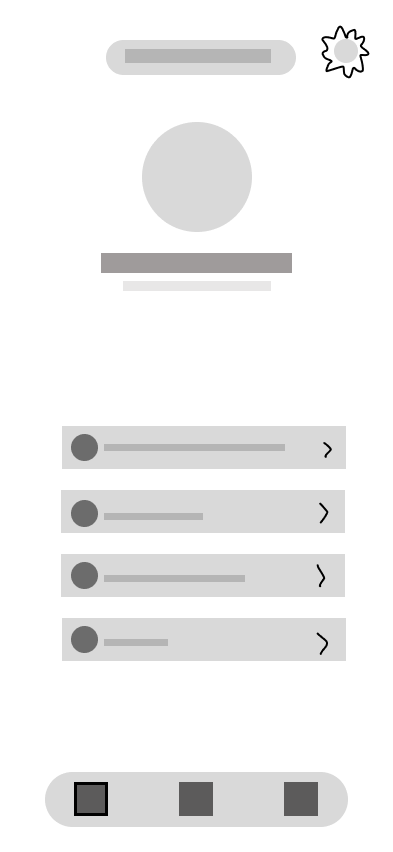
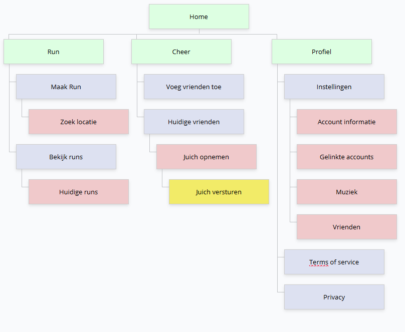
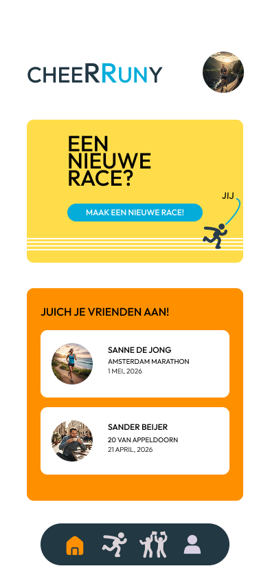
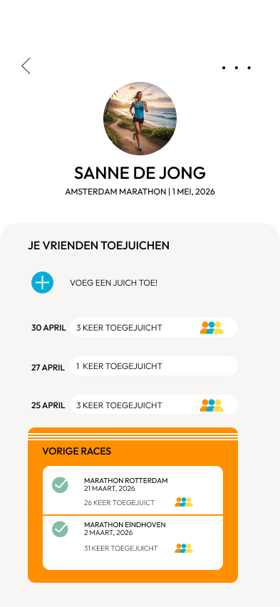

Overzicht project

Hoe zorg ik ervoor dat de gebruiker zich meer gemotiveerd voelt tijdens hun belangrijke race?
Design Proces
Onderzoek
Ik moest begrijpen wanneer renners zich het meest gemotiveerd voelen. Toen kwam ik erachter dat steun in hun ren journey erg belangrijk was. En wat zorgt voor het meeste steun? Het toejuichen van de renners.
Wireframes
In mijn hoofd had ik al dat ik velle kleuren wou gebruiken. Voor de wireframes ging ik ook voor speelsere vormen en simplistische inhoud.
Visual design
Een marathon of andere lange afstanden zijn erg lastig, fysiek en mentaal. Mijn doel was om positieve ermee te stimuleren. Velle kleuren en afbeeldingen zouden hierbij moeten helpen.
Testen
Gelukkig had ik vrienden die ook af en toe rennen als hobby. Zij kwamen snel met feedback om ook muziek te integreren en mogelijk zelf routes te maken. Dit zal dan zeker mijn volgende stap zijn hierin.



Kleurpalet & Typografie

Sitemap

Conclusie
De app zorgt voor een samenhangende community en steun voor elkaar. Ik hoop hierbij in de toekomst ook de mensen te intergreren die zelf niet racen, maar graag hun vrienden of familie willen toejuichen.

